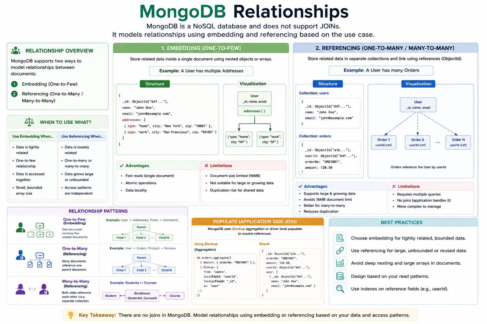

How to model relationships between data in a document database: embedding vs referencing, one-to-one, one-to-many, many-to-many, and how to actually join data with $lookup.

MongoDB is not a relational database, so it has no foreign keys or JOIN clause by default. But real applications still have related data — a user has orders, a blog post has comments, a student takes many courses. MongoDB gives you two core strategies to model these relationships:
_id — the right choice depends on how the data is accessed, how fast it grows, and whether it's read together most of the time.
| Embedding | Referencing |
|---|---|
| Related data is nested inside the parent document. | Related data lives in a separate collection, linked by an _id. |
| One read gets everything — no joins needed. | Requires a separate query or a $lookup to combine data. |
| Best for data that's always read together and doesn't grow unbounded. | Best for data that's large, shared across parents, or grows without limit. |
| Risk: documents can hit the 16MB size limit if arrays grow too large. | Risk: extra queries/joins add latency and complexity. |
Example: a user and their profile details. Usually modeled by embedding, since the profile is small and always read with the user.
{
_id: ObjectId("u1"),
name: "Asha",
profile: {
bio: "Backend engineer",
avatarUrl: "https://..."
}
}If the sub-document is large or optional and rarely fetched, referencing works too:
// users collection
{ _id: ObjectId("u1"), name: "Asha", profileId: ObjectId("p1") }
// profiles collection
{ _id: ObjectId("p1"), bio: "Backend engineer" }Example: a blog post and its comments. Three common patterns depending on scale:
{
_id: ObjectId("post1"),
title: "Intro to MongoDB",
comments: [
{ user: "Raj", text: "Great post!" },
{ user: "Meera", text: "Very helpful" }
]
}Simple and fast to read, but risky if comments can grow into the thousands (16MB document limit, degraded write performance).
{ _id: ObjectId(), postId: ObjectId("post1"), user: "Raj", text: "Great post!" }
{ _id: ObjectId(), postId: ObjectId("post1"), user: "Meera", text: "Very helpful" }Query comments for a post with:
db.comments.find({ postId: ObjectId("post1") })This scales to millions of comments per post, at the cost of needing a separate query (or $lookup).
{
_id: ObjectId("post1"),
title: "Intro to MongoDB",
commentIds: [ ObjectId("c1"), ObjectId("c2") ]
}Keeps the parent document lean while still tracking the relationship — but requires a second query to fetch the actual comments.
Example: students and courses — a student takes many courses, and a course has many students. Modeled with arrays of references on one or both sides.
{
_id: ObjectId("s1"),
name: "Vikram",
courseIds: [ ObjectId("c1"), ObjectId("c2") ]
}{
_id: ObjectId("c1"),
title: "Databases 101",
studentIds: [ ObjectId("s1"), ObjectId("s2") ]
}{ _id: ObjectId(), studentId: ObjectId("s1"), courseId: ObjectId("c1") }
{ _id: ObjectId(), studentId: ObjectId("s1"), courseId: ObjectId("c2") }When data is referenced across collections, $lookup in the aggregation pipeline performs a left-outer-join-style operation to bring it back together.
db.posts.aggregate([
{
$lookup: {
from: "comments",
localField: "_id",
foreignField: "postId",
as: "comments"
}
}
])This attaches a comments array to each post, populated with all matching documents from the comments collection — similar to a SQL LEFT JOIN.
$lookup is powerful but not free — it runs at query time and can be slower than embedding, especially without an index on foreignField. Index the field being joined on for good performance.
$lookup as a crutch to mimic SQL joins, when the access pattern would be far simpler and faster with embedding.$lookup, causing slow joins at scale.Not natively through foreign keys or joins. It supports relationships through document design — embedding related data, or referencing it by _id and combining it manually or via $lookup.
When the related data is small, bounded in size, always read together with the parent, and doesn't need to be queried independently.
When the related data is large, grows without a clear bound, is shared across multiple parents, or is frequently queried on its own.
$lookup is an aggregation stage that joins documents from another collection based on matching field values, similar to a SQL LEFT OUTER JOIN.
Every MongoDB document has a hard 16MB size limit. It matters for relationship modeling because embedding an ever-growing array (like all comments on a viral post) can eventually hit that limit and start failing writes.
Either with arrays of references on both sides (simple but can get out of sync), or with a dedicated join/enrollment collection that stores each pairing as its own document, similar to a relational join table.
Many real schemas mix both: embed a small preview or summary of related data (e.g. the last 3 comments) for fast reads, while also referencing the full related collection for when more data is needed.
Generally no — $lookup performs the join at query time and adds overhead, especially without proper indexes on the joined field. Embedding avoids that cost entirely by keeping related data in one document.
$lookup in production.MongoDB models relationships through document design rather than foreign keys: embed when data is small and always read together, reference when data is large, shared, or queried independently, and use $lookup to join referenced data when needed. One-to-one and small one-to-many relationships usually favor embedding; large one-to-many and most many-to-many relationships favor referencing, often through a dedicated join collection.